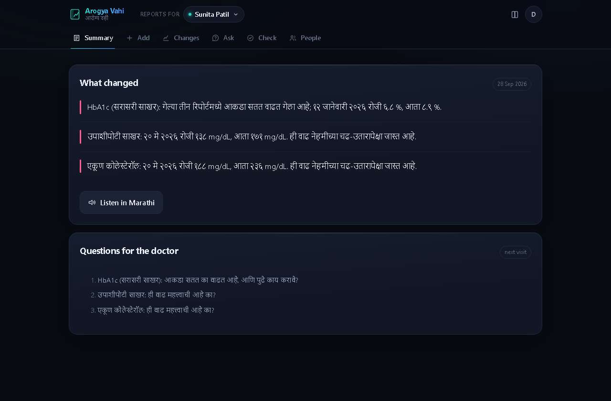
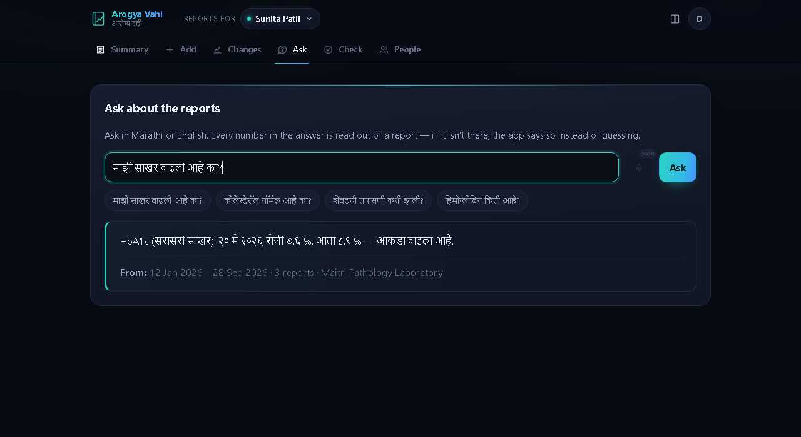
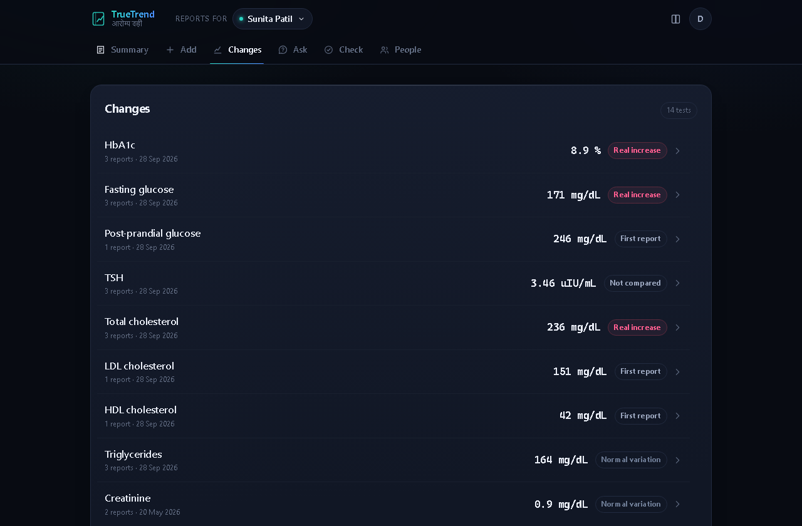

Hacktoberfest Weekend Challenge · Build for a Friend
My mother has three years of blood reports in WhatsApp.
This finally lets her read them.
TrueTrend keeps every lab report a family has, builds one timeline per test across labs, says whether a change is real or just normal variation, and explains it in Marathi — out loud. It runs on a home laptop with Gemma 4, and the reports never leave it.
It never speaks a number it can't find in the report.

The promise, and what it cost
A language model reading a lab report will sometimes produce a number that is not on the page. Not often — often enough that if the app says 6.9 and the report says 8.9, I have built something worse than the problem. So the model is not allowed to produce numbers at all.
Gemma proposes. Python verifies.
A value is marked verified only if it appears as its own word on
that page with the same qualifier, ends its cell in the table, sits in
a row that names the test, and has its unit printed in that row. The normal
range counts only when both its limits are printed there too.
Anything unproven is never spoken.
A value that fails goes to a queue for a person to confirm against the original. It is never charted, never summarised, never read aloud, and never used in an answer — it is shown as “please check” until someone says.
Templates that cannot hold a digit.
Every sentence the app says is a template with placeholders, and a test enforces that none of them contains a digit of its own. Every number is inserted by code, from a value already located in a PDF.
She asks in her own words
Gemma never writes the answer. It reads the question and returns two things — which test, and which of five question types — as a constrained schema checked against the catalog. Code builds the sentence from stored, verified values.

Real change, or just noise?
Blood values move between tests even when nothing has changed. If the app cried “your cholesterol went up!” at a 4% wobble, she would worry about nothing — and then ignore it when it mattered. So it compares every difference against the Reference Change Value for that specific test.
σ = √ln(1 + CV²) where CV = √(CVa² + CVi²)
rise = e^(1.96·√2·σ) − 1
fall = 1 − e^(−1.96·√2·σ)The log-normal form EFLM recommends, because a 30% rise and a 30% fall are not equally surprising. Every CVi comes from the EFLM Biological Variation Database, with its URL and access date in the data file. Where no published value exists — post-prandial glucose — the app never judges that test. It says “not compared” rather than inventing a constant.

Why it runs on a laptop
Because of what the data is.
This is my mother's HbA1c, her thyroid, her haemoglobin, over three years. Sending it to a company so it can be summarised is a trade I am not entitled to make for her.
Because the pipeline had to be mine.
The promise is only keepable if I control every step between the PDF and the sentence — raw page text, constrained decoding, rejection, re-verification. An API that hands back prose gives you none of those seams.
Because it has to work in a power cut.
Only one step in the whole app needs the internet: downloading the Marathi voice, once. After that a laptop with no connection reads reports perfectly.
Gemma 4 runs through Ollama on
127.0.0.1. A non-loopback host is refused unless explicitly overridden,
and OLLAMA_HOST from the environment is ignored, so a stray shell
variable cannot quietly send her reports elsewhere.
Run it yourself
It ships with four synthetic sample reports — three labs, three layouts, one invented family — so you need nobody's real data to try it.
git clone https://github.com/DnyaneshU/TrueTrend
cd TrueTrend
pip install -e ".[voice]"
ollama pull gemma4:e4b
truetrend-voice install # the Marathi voice, ~77 MB, once
truetrend-serve
Open http://127.0.0.1:8000, make an account, and add the PDFs from
samples/. Needs Python 3.11+, about 6 GB of free RAM, and roughly 30
seconds a page.
There is no hosted demo, on purpose. Putting this on a server would mean uploading someone's medical reports to a machine they don't own — which is the thing the project exists to avoid. It runs where the reports already are.
What it does not do
- No medical advice. Only: this value against that lab's printed range, this change against normal variation, and “ask your doctor”.
- 15 tests are read. Anything else is ignored rather than guessed at.
- Scanned pages are never machine-verified — there is no text layer to check against, so those values always wait for a person.
- Seven between-lab CVs are from a 2006 survey. They're old; they're also conservative, which errs toward not calling a change real.